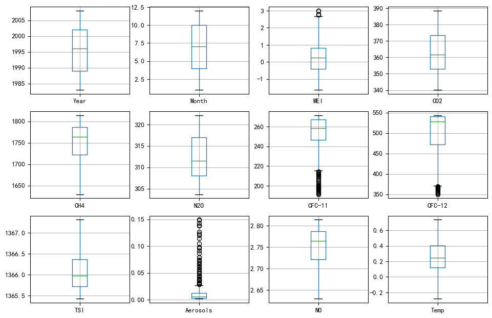

In this problem, you will attempt to study the relationship between average global temperature and several other factors. The file climate_change_1.csv contains climate data from May 1983 to December 2008. The available variables include:
Year: the observation year.
Month: the observation month.
Temp: the difference in degrees Celsius between the average global temperature in that period and a reference value. This data comes from the Climatic Research Unit at the University of East Anglia .
CO2, N2O, CH4, CFC.11, CFC.12: atmospheric concentrations of carbon dioxide (), nitrous oxide (), methane (), trichlorofluoromethane (commonly referred to as ) and dichlorodifluoromethane (; commonly referred to as ), respectively. This data comes from the ESRL/NOAA Global Monitoring Division.
CO2, N2O and CH4 are expressed in ppmv (parts per million by volume -- i.e., 397 ppmv of CO2 means that CO2 constitutes 397 millionths of the total volume of the atmosphere)
CFC.11 and CFC.12 are expressed in ppbv (parts per billion by volume).
Aerosols: the mean stratospheric aerosol optical depth at 550 nm. This variable is linked to volcanoes, as volcanic eruptions result in new particles being added to the atmosphere, which affect how much of the sun's energy is reflected back into space. This data is from the Godard Institute for Space Studies at NASA.
TSI: the total solar irradiance (TSI) in W/m2 (the rate at which the sun's energy is deposited per unit area). Due to sunspots and other solar phenomena, the amount of energy that is given off by the sun varies substantially with time. This data is from the SOLARIS-HEPPA project website.
MEI: multivariate El Nino Southern Oscillation index (MEI), a measure of the strength of the El Nino/La Nina-Southern Oscillation (a weather effect in the Pacific Ocean that affects global temperatures). This data comes from the ESRL/NOAA Physical Sciences Division.
import pandas as pd
df1 = pd.read_csv('../data/climate_change_1.csv')
df2 = pd.read_csv('../data/climate_change_2.csv')
df1.head().round()
| Year | Month | MEI | CO2 | CH4 | N2O | CFC-11 | CFC-12 | TSI | Aerosols | Temp | |
|---|---|---|---|---|---|---|---|---|---|---|---|
| 0 | 1983 | 5 | 3.0 | 346.0 | 1639.0 | 304.0 | 191.0 | 350.0 | 1366.0 | 0.0 | 0.0 |
| 1 | 1983 | 6 | 2.0 | 346.0 | 1634.0 | 304.0 | 192.0 | 352.0 | 1366.0 | 0.0 | 0.0 |
| 2 | 1983 | 7 | 2.0 | 344.0 | 1633.0 | 304.0 | 193.0 | 354.0 | 1366.0 | 0.0 | 0.0 |
| 3 | 1983 | 8 | 1.0 | 342.0 | 1631.0 | 304.0 | 194.0 | 356.0 | 1366.0 | 0.0 | 0.0 |
| 4 | 1983 | 9 | 0.0 | 340.0 | 1648.0 | 304.0 | 194.0 | 357.0 | 1366.0 | 0.0 | 0.0 |
df2.head().round(2)
| Year | Month | MEI | CO2 | CH4 | N2O | CFC-11 | CFC-12 | TSI | Aerosols | NO | Temp | |
|---|---|---|---|---|---|---|---|---|---|---|---|---|
| 0 | 1983 | 5 | 2.56 | 345.96 | 1638.59 | 303.68 | 191.32 | 350.11 | 1366.10 | 0.09 | 2.64 | 0.11 |
| 1 | 1983 | 6 | 2.17 | 345.52 | 1633.71 | 303.75 | 192.06 | 351.85 | 1366.12 | 0.08 | 2.63 | 0.12 |
| 2 | 1983 | 7 | 1.74 | 344.15 | 1633.22 | 303.80 | 192.82 | 353.72 | 1366.28 | 0.07 | 2.63 | 0.14 |
| 3 | 1983 | 8 | 1.13 | 342.25 | 1631.35 | 303.84 | 193.60 | 355.63 | 1366.42 | 0.07 | 2.63 | 0.18 |
| 4 | 1983 | 9 | 0.43 | 340.17 | 1648.40 | 303.90 | 194.39 | 357.46 | 1366.23 | 0.06 | 2.65 | 0.15 |
The most significant difference is the variable NO. Then explore basic statistics with round three:
df1.describe().round(3)
| Year | Month | MEI | CO2 | CH4 | N2O | CFC-11 | CFC-12 | TSI | Aerosols | Temp | |
|---|---|---|---|---|---|---|---|---|---|---|---|
| count | 308.000 | 308.000 | 308.000 | 308.000 | 308.000 | 308.000 | 308.000 | 308.000 | 308.000 | 308.000 | 308.000 |
| mean | 1995.662 | 6.552 | 0.276 | 363.227 | 1749.825 | 312.392 | 251.973 | 497.525 | 1366.071 | 0.017 | 0.257 |
| std | 7.423 | 3.447 | 0.938 | 12.647 | 46.052 | 5.225 | 20.232 | 57.827 | 0.400 | 0.029 | 0.179 |
| min | 1983.000 | 1.000 | -1.635 | 340.170 | 1629.890 | 303.677 | 191.324 | 350.113 | 1365.426 | 0.002 | -0.282 |
| 25% | 1989.000 | 4.000 | -0.399 | 353.020 | 1722.182 | 308.112 | 246.296 | 472.411 | 1365.717 | 0.003 | 0.122 |
| 50% | 1996.000 | 7.000 | 0.238 | 361.735 | 1764.040 | 311.507 | 258.344 | 528.356 | 1365.981 | 0.006 | 0.248 |
| 75% | 2002.000 | 10.000 | 0.830 | 373.455 | 1786.885 | 316.979 | 267.031 | 540.524 | 1366.363 | 0.013 | 0.407 |
| max | 2008.000 | 12.000 | 3.001 | 388.500 | 1814.180 | 322.182 | 271.494 | 543.813 | 1367.316 | 0.149 | 0.739 |
df2.describe().round(3)
| Year | Month | MEI | CO2 | CH4 | N2O | CFC-11 | CFC-12 | TSI | Aerosols | NO | Temp | |
|---|---|---|---|---|---|---|---|---|---|---|---|---|
| count | 308.000 | 308.000 | 308.000 | 308.000 | 308.000 | 308.000 | 308.000 | 308.000 | 308.000 | 308.000 | 308.000 | 308.000 |
| mean | 1995.662 | 6.552 | 0.276 | 363.227 | 1749.825 | 312.392 | 251.973 | 497.525 | 1366.071 | 0.017 | 2.750 | 0.257 |
| std | 7.423 | 3.447 | 0.938 | 12.647 | 46.052 | 5.225 | 20.232 | 57.827 | 0.400 | 0.029 | 0.046 | 0.179 |
| min | 1983.000 | 1.000 | -1.635 | 340.170 | 1629.890 | 303.677 | 191.324 | 350.113 | 1365.426 | 0.002 | 2.630 | -0.282 |
| 25% | 1989.000 | 4.000 | -0.399 | 353.020 | 1722.182 | 308.112 | 246.296 | 472.411 | 1365.717 | 0.003 | 2.722 | 0.122 |
| 50% | 1996.000 | 7.000 | 0.238 | 361.735 | 1764.040 | 311.507 | 258.344 | 528.356 | 1365.981 | 0.006 | 2.764 | 0.248 |
| 75% | 2002.000 | 10.000 | 0.830 | 373.455 | 1786.885 | 316.979 | 267.031 | 540.524 | 1366.363 | 0.013 | 2.787 | 0.407 |
| max | 2008.000 | 12.000 | 3.001 | 388.500 | 1814.180 | 322.182 | 271.494 | 543.813 | 1367.316 | 0.149 | 2.814 | 0.739 |
df1.info()
<class 'pandas.core.frame.DataFrame'>
RangeIndex: 308 entries, 0 to 307
Data columns (total 11 columns):
Year 308 non-null int64
Month 308 non-null int64
MEI 308 non-null float64
CO2 308 non-null float64
CH4 308 non-null float64
N2O 308 non-null float64
CFC-11 308 non-null float64
CFC-12 308 non-null float64
TSI 308 non-null float64
Aerosols 308 non-null float64
Temp 308 non-null float64
dtypes: float64(9), int64(2)
memory usage: 26.6 KB
df2.info()
<class 'pandas.core.frame.DataFrame'>
RangeIndex: 308 entries, 0 to 307
Data columns (total 12 columns):
Year 308 non-null int64
Month 308 non-null int64
MEI 308 non-null float64
CO2 308 non-null float64
CH4 308 non-null float64
N2O 308 non-null float64
CFC-11 308 non-null float64
CFC-12 308 non-null float64
TSI 308 non-null float64
Aerosols 308 non-null float64
NO 308 non-null float64
Temp 308 non-null float64
dtypes: float64(10), int64(2)
memory usage: 29.0 KB
No missing data were found, then continue.
print('Duplicated rows:', len(df1[df1.duplicated()]), ', then continue.')
Duplicated rows: 0 , then continue.
Conduct a boxploting to find out outliers in DF1 and DF2:
import sys
import seaborn as sns
import matplotlib.pyplot as plt
fig1 = plt.figure(figsize=(12,8), dpi=96)
for i in range(1, len(df1.columns) + 1):
fig1.add_subplot(3, 4, i)
df1.iloc[:, [i-1]].boxplot()
range(1, len(df2.columns) + 1)
range(1, 13)
fig2 = plt.figure(figsize=(12,8), dpi=96)
for i in range(1, len(df2.columns) + 1):
fig2.add_subplot(3, 4, i)
df2.iloc[:, [i-1]].boxplot()

Check outliers:
import ipywidgets as widgets
z_slider = widgets.FloatSlider(
value=2.9,
min=2,
max=3.5,
step=0.1,
description='Threshold:',
disabled=False,
continuous_update=True,
orientation='horizontal',
readout=True,
readout_format='.1f',
)
z_slider
FloatSlider(value=2.9, description='Threshold:', max=3.5, min=2.0, readout_format='.1f')
from scipy import stats
import numpy as np
z = np.abs(stats.zscore(df1['MEI']))
outlier_index = np.where(z > z_slider.value)[0]
print('Threshhold:', z_slider.value)
print('Index:', outlier_index)
print('Outlier:', [df1['MEI'][i] for i in outlier_index])
Threshhold: 2.9
Index: [171 172]
Outlier: [3.0010000000000003, 3.0]
Since rare outliers, ignore at preparation step and continue.
Find and plot highly correlated variables (r>0.6 in df1, plotting r>0.5):
corr = df1.corr()
high_corr = corr[np.abs(corr) > 0.5].fillna(0)
corr[np.abs(corr) > 0.6].fillna('')
| Year | Month | MEI | CO2 | CH4 | N2O | CFC-11 | CFC-12 | TSI | Aerosols | Temp | |
|---|---|---|---|---|---|---|---|---|---|---|---|
| Year | 1 | 0.985379 | 0.910563 | 0.99485 | 0.870067 | 0.755731 | |||||
| Month | 1 | ||||||||||
| MEI | 1 | ||||||||||
| CO2 | 0.985379 | 1 | 0.872253 | 0.981135 | 0.82321 | 0.748505 | |||||
| CH4 | 0.910563 | 0.872253 | 1 | 0.894409 | 0.713504 | 0.958237 | 0.699697 | ||||
| N2O | 0.99485 | 0.981135 | 0.894409 | 1 | 0.839295 | 0.743242 | |||||
| CFC-11 | 0.713504 | 1 | 0.831381 | ||||||||
| CFC-12 | 0.870067 | 0.82321 | 0.958237 | 0.839295 | 0.831381 | 1 | 0.688944 | ||||
| TSI | 1 | ||||||||||
| Aerosols | 1 | ||||||||||
| Temp | 0.755731 | 0.748505 | 0.699697 | 0.743242 | 0.688944 | 1 |
plt.figure(dpi=128)
ax = sns.heatmap(
high_corr,
vmin=-1, vmax=1, center=0,
cmap=sns.diverging_palette(20, 220, n=200),
square=True
)
ax.set_xticklabels(
ax.get_xticklabels(),
rotation=45,
horizontalalignment='right'
);
Similarly, correlation in df1:
corr = df2.corr()
high_corr = corr[np.abs(corr) > 0.5].fillna(0)
corr[np.abs(corr) > 0.6].fillna('')
| Year | Month | MEI | CO2 | CH4 | N2O | CFC-11 | CFC-12 | TSI | Aerosols | NO | Temp | |
|---|---|---|---|---|---|---|---|---|---|---|---|---|
| Year | 1 | 0.985379 | 0.910563 | 0.99485 | 0.870067 | 0.910563 | 0.755731 | |||||
| Month | 1 | |||||||||||
| MEI | 1 | |||||||||||
| CO2 | 0.985379 | 1 | 0.872253 | 0.981135 | 0.82321 | 0.872253 | 0.748505 | |||||
| CH4 | 0.910563 | 0.872253 | 1 | 0.894409 | 0.713504 | 0.958237 | 1 | 0.699697 | ||||
| N2O | 0.99485 | 0.981135 | 0.894409 | 1 | 0.839295 | 0.894409 | 0.743242 | |||||
| CFC-11 | 0.713504 | 1 | 0.831381 | 0.713504 | ||||||||
| CFC-12 | 0.870067 | 0.82321 | 0.958237 | 0.839295 | 0.831381 | 1 | 0.958237 | 0.688944 | ||||
| TSI | 1 | |||||||||||
| Aerosols | 1 | |||||||||||
| NO | 0.910563 | 0.872253 | 1 | 0.894409 | 0.713504 | 0.958237 | 1 | 0.699697 | ||||
| Temp | 0.755731 | 0.748505 | 0.699697 | 0.743242 | 0.688944 | 0.699697 | 1 |
plt.figure(dpi=128)
ax = sns.heatmap(
high_corr,
vmin=-1, vmax=1, center=0,
cmap=sns.diverging_palette(20, 220, n=200),
square=True
)
ax.set_xticklabels(
ax.get_xticklabels(),
rotation=45,
horizontalalignment='right'
);

Potential redundant variables found, however, now the data is prepared for analyzing.
We are interested in how changes in these variables affect future temperatures, as well as how well these variables explain temperature changes so far. To do this, first read the dataset climate_change_1.csv into Python or Matlab.
Then, split the data into a training set, consisting of all the observations up to and including 2006, and a testing set consisting of the remaining years. A training set refers to the data that will be used to build the model, and a testing set refers to the data we will use to test our predictive ability.
After seeing the problem, your classmate Alice immediately argues that we can apply a linear regression model. Though being a little doubtful, you decide to have a try. To solve the linear regression problem, you recall the linear regression has a closed form solution:
Though data have been prepared in section Data Preparation, dataset df1 has been imported again here following problem description.
Read the dataset:
# loaded in exploration
# import pandas as pd
# df1 = pd.read_csv('../data/climate_change_1.csv').iloc[:,2:]
Split into training set and testing set:
# Df1 trainset
df1_train = df1[df1['Year']<=2006].iloc[:,2:]
# Check the result
df1_train.iloc[[0, 1,-2, -1],:]
| MEI | CO2 | CH4 | N2O | CFC-11 | CFC-12 | TSI | Aerosols | Temp | |
|---|---|---|---|---|---|---|---|---|---|
| 0 | 2.556 | 345.96 | 1638.59 | 303.677 | 191.324 | 350.113 | 1366.1024 | 0.0863 | 0.109 |
| 1 | 2.167 | 345.52 | 1633.71 | 303.746 | 192.057 | 351.848 | 1366.1208 | 0.0794 | 0.118 |
| 282 | 1.292 | 380.18 | 1791.91 | 320.321 | 248.605 | 539.500 | 1365.7039 | 0.0049 | 0.440 |
| 283 | 0.951 | 381.79 | 1795.04 | 320.451 | 248.480 | 539.377 | 1365.7087 | 0.0054 | 0.518 |
# Df1 testet
df1_test = df1[df1['Year']>2006].iloc[:,2:]
# Check the result
df1_test.iloc[[0, 1,-2, -1],:]
| MEI | CO2 | CH4 | N2O | CFC-11 | CFC-12 | TSI | Aerosols | Temp | |
|---|---|---|---|---|---|---|---|---|---|
| 284 | 0.974 | 382.93 | 1799.66 | 320.561 | 248.372 | 539.206 | 1365.7173 | 0.0054 | 0.601 |
| 285 | 0.510 | 383.81 | 1803.08 | 320.571 | 248.264 | 538.973 | 1365.7145 | 0.0051 | 0.498 |
| 306 | -0.621 | 384.13 | 1812.37 | 322.013 | 244.225 | 534.906 | 1365.7065 | 0.0048 | 0.394 |
| 307 | -0.666 | 385.56 | 1812.88 | 322.182 | 244.204 | 535.005 | 1365.6926 | 0.0046 | 0.330 |
Implement a function closed_form_1 that computes this closed form solution given the features X, labels y (using Python or Matlab).
Given a pandas Dataframe, the features X is the dataframe excluding taget y, then:
import numpy as np # matrix, vector, and linear algebra support
from numpy.linalg import inv # matrix inversion
def closed_form_1(X: np.ndarray, y: np.ndarray) -> np.matrix:
"""
To calculate OLS theta(s) given X, y in ndarrays.
Parameters:
----------
X: features, IV.
y: taget variable, DV.
Return:
----------
theta: coefficients
"""
X = np.column_stack((np.ones(len(X)), X)) # add x0 = 1 to matrix X
theta = inv(X.T @ X) @ X.T @ y
#theta = theta[1:].reshape((1,10))
return theta
def closed_form_df(df: pd.core.frame.DataFrame, column: int = 8) -> np.matrix:
"""
To calculate OLS theta(s) given data in a DataFrame.
Parameters:
----------
df: a DataFrame of data including both IV X and DV y.
column = 8: index number of clomn where DV y lies. The default value is 8.
Return:
----------
theta: coefficients
"""
X = df.drop(df.columns[column], axis=1).to_numpy() # X: the features
X = np.column_stack((np.ones(len(X)), X)) # add x0 = 1 to matrix X
y = df.iloc[:, [column]].to_numpy(
) # y: the results, lower case to emphasize the difference
theta = inv(X.T @ X) @ X.T @ y
#theta = theta[1:].reshape((1,10))
return theta
Test closed_form_1 and closed_form_df on df1:
df1_train.drop(df1_train.columns[8], axis=1)
| MEI | CO2 | CH4 | N2O | CFC-11 | CFC-12 | TSI | Aerosols | |
|---|---|---|---|---|---|---|---|---|
| 0 | 2.556 | 345.96 | 1638.59 | 303.677 | 191.324 | 350.113 | 1366.1024 | 0.0863 |
| 1 | 2.167 | 345.52 | 1633.71 | 303.746 | 192.057 | 351.848 | 1366.1208 | 0.0794 |
| 2 | 1.741 | 344.15 | 1633.22 | 303.795 | 192.818 | 353.725 | 1366.2850 | 0.0731 |
| 3 | 1.130 | 342.25 | 1631.35 | 303.839 | 193.602 | 355.633 | 1366.4202 | 0.0673 |
| 4 | 0.428 | 340.17 | 1648.40 | 303.901 | 194.392 | 357.465 | 1366.2335 | 0.0619 |
| ... | ... | ... | ... | ... | ... | ... | ... | ... |
| 279 | 0.759 | 380.45 | 1762.66 | 319.930 | 248.981 | 539.682 | 1365.7067 | 0.0041 |
| 280 | 0.793 | 378.92 | 1776.04 | 320.010 | 248.775 | 539.566 | 1365.8419 | 0.0043 |
| 281 | 0.892 | 379.16 | 1789.02 | 320.125 | 248.666 | 539.488 | 1365.8270 | 0.0044 |
| 282 | 1.292 | 380.18 | 1791.91 | 320.321 | 248.605 | 539.500 | 1365.7039 | 0.0049 |
| 283 | 0.951 | 381.79 | 1795.04 | 320.451 | 248.480 | 539.377 | 1365.7087 | 0.0054 |
284 rows × 8 columns
# Given X, and y in numpy arrays
X = df1_train.drop(df1_train.columns[8], axis=1).to_numpy() # X: the features
y = df1_train.iloc[:, [8]].to_numpy() # y: the results, lower case to emphasize the difference
X_test = df1_test.drop(df1_train.columns[8], axis=1).to_numpy()
y_test = df1_test.iloc[:, [8]].to_numpy()
theta = closed_form_1(X, y)
theta
array([[-1.24594260e+02],
[ 6.42053134e-02],
[ 6.45735927e-03],
[ 1.24041896e-04],
[-1.65280032e-02],
[-6.63048889e-03],
[ 3.80810324e-03],
[ 9.31410835e-02],
[-1.53761324e+00]])
# Given a DataFrame
theta = closed_form_df(df1_train).reshape((1,9))
theta
[[1.0000000e+00 2.5560000e+00 3.4596000e+02 ... 3.5011300e+02
1.3661024e+03 8.6300000e-02]
[1.0000000e+00 2.1670000e+00 3.4552000e+02 ... 3.5184800e+02
1.3661208e+03 7.9400000e-02]
[1.0000000e+00 1.7410000e+00 3.4415000e+02 ... 3.5372500e+02
1.3662850e+03 7.3100000e-02]
...
[1.0000000e+00 8.9200000e-01 3.7916000e+02 ... 5.3948800e+02
1.3658270e+03 4.4000000e-03]
[1.0000000e+00 1.2920000e+00 3.8018000e+02 ... 5.3950000e+02
1.3657039e+03 4.9000000e-03]
[1.0000000e+00 9.5100000e-01 3.8179000e+02 ... 5.3937700e+02
1.3657087e+03 5.4000000e-03]]
array([[-1.24594260e+02, 6.42053134e-02, 6.45735927e-03,
1.24041896e-04, -1.65280032e-02, -6.63048889e-03,
3.80810324e-03, 9.31410835e-02, -1.53761324e+00]])
Using scipy to check the result:
from sklearn.linear_model import LinearRegression as lm
l=lm().fit(X, y)
l.coef_
array([[ 6.42053134e-02, 6.45735927e-03, 1.24041896e-04,
-1.65280033e-02, -6.63048889e-03, 3.80810324e-03,
9.31410835e-02, -1.53761324e+00]])
Works fine (some differences due to SVD used in sklearn.LinearRegression).
Write down the mathematical formula for the linear model and evaluate the model R squre on the training set and the testing set.
df1_train.columns
Index(['MEI', 'CO2', 'CH4', 'N2O', 'CFC-11', 'CFC-12', 'TSI', 'Aerosols',
'Temp'],
dtype='object')
Formula of this model(round(5))
Formula of R-squred
R-squared measures model fitting and can be calculated as:
def predict(X: np.ndarray, theta: np.ndarray) -> np.ndarray:
"""
To predict y given X and theta.
Parameters:
----------
X: features, IV.
theta: coefficients.
Return:
----------
y_hat: predicted value.
"""
X = np.column_stack((np.ones(len(X)), X)) # add x0 = 1 to matrix X
theta = theta.reshape((1, len(theta)))
y_hat = np.sum(X * theta, axis=1)
return (y_hat)
Define a score function to calculate :
def score(y: np.ndarray, y_hat: np.ndarray) -> float:
"""
To calculate OLS R^2 given data in ndarrays.
Parameters:
----------
y: actual labels.
y_hat: predicted values.
Return:
----------
SST: R^2 caculated based on y and y_hat.
"""
mean = y.mean()
TSS = np.sum(np.square(y_hat - mean))
ESS = np.sum(np.square(y - mean))
SST = TSS / ESS
return SST
On training set:
X = df1_train.drop(df1_train.columns[8], axis=1).to_numpy()
y = df1_train.iloc[:, [8]].to_numpy()
rsquare_train = score(y, predict(X, closed_form_1(X, y)))
print("R2:", rsquare_train)
# Use *scipy* to check the result:
l=lm().fit(X, y)
print("R2 by scipy:", l.score(X, y))
R2: 0.7508932770388234
R2 by scipy: 0.7508932770523428
On testing set:
rsquare_test = score(y_test, predict(X_test, closed_form_1(X, y)))
print("R2:", rsquare_test)
R2: 0.22517701916248536
Works fine.
Evaluation
Based on the formula above, R-squred can be applied in Python to evaluate previous model. On training set: is 0.75089, while on testing set, is 0.22518.
*** However, for a multi-variable linear model, $R^{2}{adjusted}$ may be a better indicator because the original $R^{2}$ is sensitive to the number of features._
Which variables are significant in the model?
import statsmodels.api as sm
# set an alpha
alpha = 0.05
X2 = sm.add_constant(X)
l = sm.OLS(y, X2).fit()
pvalues = l.summary2().tables[1]['P>|t|']
labels = ['x0: constant'] + ["x" + str(i+1) + ": " + df1_train.columns[i] for i in range(len(df1_train.columns)-1)]
variables = pd.DataFrame(np.concatenate([pd.DataFrame(labels), pd.DataFrame(pvalues)], axis=1))
variables.columns = ['Variable', 'pvalues']
# print significant variables
variables[variables.pvalues < alpha]
| Variable | pvalues | |
|---|---|---|
| 0 | x0: constant | 1.43105e-09 |
| 1 | x1: MEI | 4.89889e-20 |
| 2 | x2: CO2 | 0.00505252 |
| 5 | x5: CFC-11 | 5.95729e-05 |
| 6 | x6: CFC-12 | 0.00020972 |
| 7 | x7: TSI | 1.09594e-09 |
| 8 | x8: Aerosols | 5.41127e-12 |
That's to say, significant(alpha=0.05) varibles are:
[i for i in variables[variables.pvalues < alpha].Variable.to_numpy()]
['x0: constant',
'x1: MEI',
'x2: CO2',
'x5: CFC-11',
'x6: CFC-12',
'x7: TSI',
'x8: Aerosols']
Write down the necessary conditions for using the closed form solution. And you can apply it to the dataset climate_change_2.csv, explain the solution is unreasonable.
Necessary conditions
must be invertible.
df2.head(2)
| Year | Month | MEI | CO2 | CH4 | N2O | CFC-11 | CFC-12 | TSI | Aerosols | NO | Temp | |
|---|---|---|---|---|---|---|---|---|---|---|---|---|
| 0 | 1983 | 5 | 2.556 | 345.96 | 1638.59 | 303.677 | 191.324 | 350.113 | 1366.1024 | 0.0863 | 2.63859 | 0.109 |
| 1 | 1983 | 6 | 2.167 | 345.52 | 1633.71 | 303.746 | 192.057 | 351.848 | 1366.1208 | 0.0794 | 2.63371 | 0.118 |
# Df2 trainset
df2_train = df2[df2['Year']<=2006].iloc[:,2:]
# Check the result
df2_train.iloc[[0, 1,-2, -1],:]
| MEI | CO2 | CH4 | N2O | CFC-11 | CFC-12 | TSI | Aerosols | NO | Temp | |
|---|---|---|---|---|---|---|---|---|---|---|
| 0 | 2.556 | 345.96 | 1638.59 | 303.677 | 191.324 | 350.113 | 1366.1024 | 0.0863 | 2.63859 | 0.109 |
| 1 | 2.167 | 345.52 | 1633.71 | 303.746 | 192.057 | 351.848 | 1366.1208 | 0.0794 | 2.63371 | 0.118 |
| 282 | 1.292 | 380.18 | 1791.91 | 320.321 | 248.605 | 539.500 | 1365.7039 | 0.0049 | 2.79191 | 0.440 |
| 283 | 0.951 | 381.79 | 1795.04 | 320.451 | 248.480 | 539.377 | 1365.7087 | 0.0054 | 2.79504 | 0.518 |
# Df2 testet
df2_test = df2[df2['Year']>2006].iloc[:,2:]
# Check the result
df2_test.iloc[[0, 1,-2, -1],:]
| MEI | CO2 | CH4 | N2O | CFC-11 | CFC-12 | TSI | Aerosols | NO | Temp | |
|---|---|---|---|---|---|---|---|---|---|---|
| 284 | 0.974 | 382.93 | 1799.66 | 320.561 | 248.372 | 539.206 | 1365.7173 | 0.0054 | 2.79966 | 0.601 |
| 285 | 0.510 | 383.81 | 1803.08 | 320.571 | 248.264 | 538.973 | 1365.7145 | 0.0051 | 2.80308 | 0.498 |
| 306 | -0.621 | 384.13 | 1812.37 | 322.013 | 244.225 | 534.906 | 1365.7065 | 0.0048 | 2.81237 | 0.394 |
| 307 | -0.666 | 385.56 | 1812.88 | 322.182 | 244.204 | 535.005 | 1365.6926 | 0.0046 | 2.81288 | 0.330 |
# Given X, and y in numpy arrays
X_2 = df2_train.drop(df2_train.columns[9], axis=1).to_numpy() # X: the features
y_2 = df2_train.iloc[:, [9]].to_numpy() # y: the results, lower case to emphasize the difference
X_2_test = df2_test.drop(df2_test.columns[9], axis=1).to_numpy()
y_2_test = df2_test.iloc[:, [9]].to_numpy()
theta = closed_form_1(X_2, y_2)
theta
array([[-1.18459383e+02],
[ 6.41762745e-02],
[ 6.48209178e-03],
[ 6.24389931e-03],
[-1.65280032e-02],
[-6.63048889e-03],
[ 3.80810324e-03],
[ 9.31410835e-02],
[-1.53761324e+00],
[-6.12593018e+00]])
Why unreasonable:
Because is non-invertible.
According to Andrew NG,
When implementing the normal equation in octave we want to use the
pinvfunction rather thaninv. The 'pinv' function will give you a value of \thetaθ even if is not invertible.
If is noninvertible, the common causes might be having :
- Redundant features, where two features are very closely related (i.e. they are linearly dependent)
- Too many features (e.g. m ≤ n). In this case, delete some features or use "regularization" (to be explained in a later lesson).
Solutions to the above problems include deleting a feature that is linearly dependent with another or deleting one or more features when there are too many features.
In this case, many variables (as mentioned in the first section exploration) are highly correlated.
Regularization is a method to boost robustness of model, including L1 regularization and L_2 regularization.
Please write down the loss function for linear model with L1 regularization, L2 regularization, respectively.
L1， Lasso Regression:
L2， Ridge Regression:
The closed form solution for linear model with L2 regularization:
𝛉 = (𝐗^𝐓𝐗 + 𝛌𝐈)^{−𝟏}𝐗^𝐓𝐘where I is the identity matrix. Write a function closed_form_2 that computes this closed form solution given the features X, labels Y and the regularization parameter λ (using Python or Matlab).
def closed_form_2(X: np.ndarray, y: np.ndarray, lambd: float) -> np.ndarray:
"""
To calculate OLS theta(s) given X, y in ndarrays.
Parameters:
----------
X: features, IV.
y: taget variable, DV.
lambd: regularization parameter
Return:
----------
theta: coefficients
"""
X = np.concatenate([np.ones((len(X), 1)), X], axis=1) # add x0 = 1 to matrix X
I = np.identity(len(X[0]))
theta = inv(X.T @ X + lambd * I) @ (X.T @ y)
return theta
len(X[0])
8
Compare the two solutions in problem 1 and problem 2 and explain the reason why linear model with L2 regularization is robust. (using climate_change_1.csv)
X_train = df1_train.drop(df1_train.columns[8], axis=1).to_numpy()
y_train = df1_train.iloc[:, [8]].to_numpy()
theta_0 = closed_form_1(X_train, y_train)
theta_0
array([[-1.24594260e+02],
[ 6.42053134e-02],
[ 6.45735927e-03],
[ 1.24041896e-04],
[-1.65280032e-02],
[-6.63048889e-03],
[ 3.80810324e-03],
[ 9.31410835e-02],
[-1.53761324e+00]])
theta_2 = closed_form_2(X_train, y_train, 0.5)
theta_2
array([[-4.68953239e-03],
[ 4.55768014e-02],
[ 7.80443532e-03],
[ 1.95701031e-04],
[-1.64893727e-02],
[-6.38359095e-03],
[ 3.74766007e-03],
[ 1.44919104e-03],
[-3.65599605e-01]])
rsquare_test_theta_0 = score(y_test, predict(X_test, theta_0))
rsquare_test_theta_2 = score(y_test, predict(X_test, theta_2))
print("R2:", rsquare_test_theta_0, rsquare_test_theta_2)
R2: 0.22517701916248536 0.8022366128860412
Obviously, theta_2, which is the result of ridge regression, is much better due to the lower effect of redundant variables.
You can change the regularization parameter λ to get different solutions for this problem. Suppose we set λ = 10, 1, 0.1, 0.01, 0.001, and please evaluate the model on the training set and the testing set.
from sklearn.metrics import mean_squared_error as mse
# Define constants
X_train = df1_train.drop(df1_train.columns[8], axis=1).to_numpy()
y_train = df1_train.iloc[:, [8]].to_numpy()
X_test = df1_test.drop(df1_test.columns[8], axis=1).to_numpy()
y_test = df1_test.iloc[:, [8]].to_numpy()
lambds = [10.00, 1.000, 0.10, 0.01, 0.001]
print("R scores comparison")
# print("λ Training R2 Testing R2 Testing MSE")
print("λ Training R2 Testing R2")
for lambd in lambds:
theta = closed_form_2(X_train, y_train, lambd)
rsquare_train = score(y_train, predict(X_train, theta))
rsquare_test = score(y_test, predict(X_test, theta))
# meanse = mse(y_test, predict(X_test, theta))
# print(lambd, " ", rsquare_train.round(5), " ", rsquare_test.round(5), " ", meanse.round(5))
print(lambd, " ", rsquare_train.round(5), " ", rsquare_test.round(5))
R scores comparison
λ Training R2 Testing R2
10.0 0.67461 0.94087
1.0 0.67947 0.84675
0.1 0.69447 0.67329
0.01 0.71165 0.58528
0.001 0.71483 0.56252
Finally, please decide the best regularization parameter λ. (Note that: As a qualified data analyst, you must know how to choose model parameters, please learn about cross validation methods.)
from sklearn.model_selection import KFold
from sklearn.linear_model import Ridge
from sklearn.model_selection import GridSearchCV
def cross_validation(X, y):
"""
Using k-fold to get optimal value of lambda based on R-squared.
Parameters:
----------
X: features, IV.
y: taget variable, DV.
Return:
----------
alpha: learning rate
"""
kfold = KFold(n_splits=10).split(X, y)
model = Ridge(normalize=True) # Normalization returns better result
lambdas = [10, 1, 0.1, 0.01, 0.001]
grid_param = {"alpha": lambdas}
grid = GridSearchCV(estimator=model,
param_grid=grid_param,
cv=kfold,
scoring="r2")
grid.fit(X, y)
alpha = grid.best_params_['alpha']
return alpha
print('Optimal lamba should be ', cross_validation(X_train, y_train))
Optimal lamba should be 0.1
C:\Users\oyrx\Anaconda3\lib\site-packages\sklearn\model_selection\_search.py:814: DeprecationWarning: The default of the `iid` parameter will change from True to False in version 0.22 and will be removed in 0.24. This will change numeric results when test-set sizes are unequal.
DeprecationWarning)
From Problem 1, you can know which variables are significant, therefore you can use less variables to train model. For example, remove highly correlated and redundant features. You can propose a workflow to select feature.
As mentioned in the first section and known siginificant variables(MEI, CO2, CDC-11, CDC-12, TST, Aerocols), a new correlation matrix can be introduced:
corr = df1[['MEI', 'CO2', 'CFC-11', 'CFC-12', 'TSI', 'Aerosols' ]].corr()
high_corr = corr[np.abs(corr) > 0.5].fillna(0)
corr[np.abs(corr) > 0.6].fillna('')
plt.figure(dpi=128)
ax = sns.heatmap(
high_corr,
vmin=-1, vmax=1, center=0,
cmap=sns.diverging_palette(20, 220, n=200),
square=True
)
ax.set_xticklabels(
ax.get_xticklabels(),
rotation=45,
horizontalalignment='right'
);

Thus, CFC-12 should also be removed(r>0.6) then we have:
corr = df1[['MEI', 'CO2', 'CFC-11', 'TSI', 'Aerosols' ]].corr()
high_corr = corr[np.abs(corr) > 0.5].fillna(0)
corr[np.abs(corr) > 0.6].fillna('')
plt.figure(dpi=128)
ax = sns.heatmap(
high_corr,
vmin=-1, vmax=1, center=0,
cmap=sns.diverging_palette(20, 220, n=200),
square=True
)
ax.set_xticklabels(
ax.get_xticklabels(),
rotation=45,
horizontalalignment='right'
);

Now no redundant variables left.
Train a better model than the model in Problem 2.
X_lesser = df1_train[['MEI', 'CO2', 'CFC-11', 'TSI', 'Aerosols' ]].to_numpy() # X: the features
y_lesser = df1_train.iloc[:, [8]].to_numpy() # y: the results, lower case to emphasize the difference
X_test = df1_test[['MEI', 'CO2', 'CFC-11', 'TSI', 'Aerosols' ]].to_numpy()
y_test = df1_test.iloc[:, [8]].to_numpy()
#theta_lesser = closed_form_1(X_lesser, y_lesser)
theta_lesser = closed_form_2(X_lesser, y_train, cross_validation(X_lesser,y_lesser))
theta_lesser = np.array(theta_lesser)
formula = [str(theta_lesser.round(5).tolist()[i][0]) + ' * x' + str(i) + ' + ' for i in range(0, len(theta_lesser.round(5).tolist()))]
print('Thus our better model is: \n\ny = '+ ' '.join(formula).replace(' * x0', '')[:-3])
Thus our better model is:
y = -0.02465 + 0.04909 * x1 + 0.0118 * x2 + 2e-05 * x3 + -0.00293 * x4 + -0.88807 * x5
C:\Users\oyrx\Anaconda3\lib\site-packages\sklearn\model_selection\_search.py:814: DeprecationWarning: The default of the `iid` parameter will change from True to False in version 0.22 and will be removed in 0.24. This will change numeric results when test-set sizes are unequal.
DeprecationWarning)
Significance:
l = sm.OLS(y_lesser, X_lesser).fit()
pvalues = l.summary2().tables[1]['P>|t|']
pvalues<0.05
x1 True
x2 True
x3 False
x4 True
x5 True
Name: P>|t|, dtype: bool
Then remove x3 based on the new result:
X_lesser = df1_train[['MEI', 'CO2', 'TSI', 'Aerosols' ]].to_numpy() # X: the features
y_lesser = df1_train.iloc[:, [8]].to_numpy() # y: the results, lower case to emphasize the difference
X_test = df1_test[['MEI', 'CO2', 'TSI', 'Aerosols' ]].to_numpy()
y_test = df1_test.iloc[:, [8]].to_numpy()
theta_lesser = closed_form_1(X_lesser, y_train)
theta_lesser = np.array(theta_lesser)
formula = [str(theta_lesser.round(5).tolist()[i][0]) + ' * x' + str(i) + ' + ' for i in range(0, len(theta_lesser.round(5).tolist()))]
print('Thus our better model is: \n\ny = '+ ' '.join(formula).replace(' * x0', '')[:-3])
Thus our better model is:
y = -118.60162 + 0.06204 * x1 + 0.01069 * x2 + 0.08418 * x3 + -1.58444 * x4
l = sm.OLS(y_lesser, X_lesser).fit()
pvalues = l.summary2().tables[1]['P>|t|']
pvalues<0.05
x1 True
x2 True
x3 True
x4 True
Name: P>|t|, dtype: bool
R2:
rsquare_train = score(y_lesser, predict(X_lesser, theta_lesser))
rsquare_test = score(y_test, predict(X_test, theta_lesser))
print(('R2\nTraining: {}\nTesting: {}').format(rsquare_train, rsquare_test))
R2
Training: 0.7336403428986277
Testing: 0.6328867941215359
Gradient descent algorithm is an iterative process that takes us to the minimum of a function. Please write down the iterative expression for updating the solution of linear model and implement it using Python or Matlab in gradientDescent function.
def cost_function(X: np.ndarray, y: np.ndarray, theta: np.ndarray) -> float:
"""
To calculate cost given X, y, and theta in ndarrays.
Parameters:
----------
X: features, IV.
y: taget variable, DV.
theta: coefficients
Return:
----------
cost: calculated cost
"""
cost = np.sum(np.power((X * theta.T) - y, 2)) / (2 * len(X))
return cost
def gradientDescent(X: np.ndarray, y: np.ndarray, theta: np.ndarray,
alpha: float, iters: float) -> np.matrix and np.ndarray:
"""
To find theta given X, y, theta in ndarrays and alpha, iters in float.
Parameters:
----------
X: features, IV.
y: taget variable, DV.
theta: coefficients
alpha: learning rate
iters: an assigned number of iterations
Return:
----------
theta: np.matrix, final theta
cost: np.ndarray, calculated cost
"""
temp = np.mat(np.zeros(theta.shape))
cost = np.zeros(iters)
thetaNums = int(theta.shape[1])
for i in range(iters):
error = (X * theta.T - y)
for j in range(thetaNums):
derivativeInner = np.multiply(error, X[:, j])
temp[0, j] = theta[0, j] - (alpha * np.sum(derivativeInner) /
len(X))
theta = temp
cost[i] = cost_function(X, y, theta)
return theta, cost
import matplotlib.pyplot as plt
theta = np.mat([0,0,0,0,0,0,0,0,0])
iters = 5000 # The number of iterations
alpha = 0.01 # Learning rate
X = df1.get(["MEI","CO2","CH4","N2O","CFC-11","CFC-12","TSI","Aerosols"])
X = np.column_stack((np.ones(len(X)),X))
X_train = X[:284]
X_test = X[284:]
X_train = np.mat(X_train)
y = df1.get("Temp")
y_train = y[:284]
y_test = y[284:]
y_train = np.mat(y_train).T
for i in range(1,9):
X_train[:,i] = (X_train[:,i] - min(X_train[:,i])) / (max(X_train[:,i]) - min(X_train[:,i]))
theta_n = (X_train.T*X_train).I*X_train.T*y_train
print("theta =",theta_n)
theta = [[-0.07698894]
[ 0.29450977]
[ 0.28935427]
[ 0.02211171]
[-0.27724073]
[-0.53156629]
[ 0.7376296 ]
[ 0.17604596]
[-0.22725924]]
finalTheta,cost = gradientDescent(X_train,y_train,theta,alpha,iters)
fig, bx = plt.subplots(figsize=(8,6))
bx.plot(np.arange(iters), cost, 'r')
bx.set_xlabel('Iterations')
bx.set_ylabel('Cost')
bx.set_title('Error vs. Training Epoch')
plt.show()

The result indicates that algorithm has converged and the final theta is
print("Final theta ",finalTheta, 'with cost', cost)
Final theta [[-0.07049773 0.19881777 0.19132161 0.06760065 0.18431036 -0.08700985
0.08339899 0.1001724 -0.16872269]] with cost [0.0444738 0.04207593 0.0398436 ... 0.0044812 0.0044811 0.004481 ]